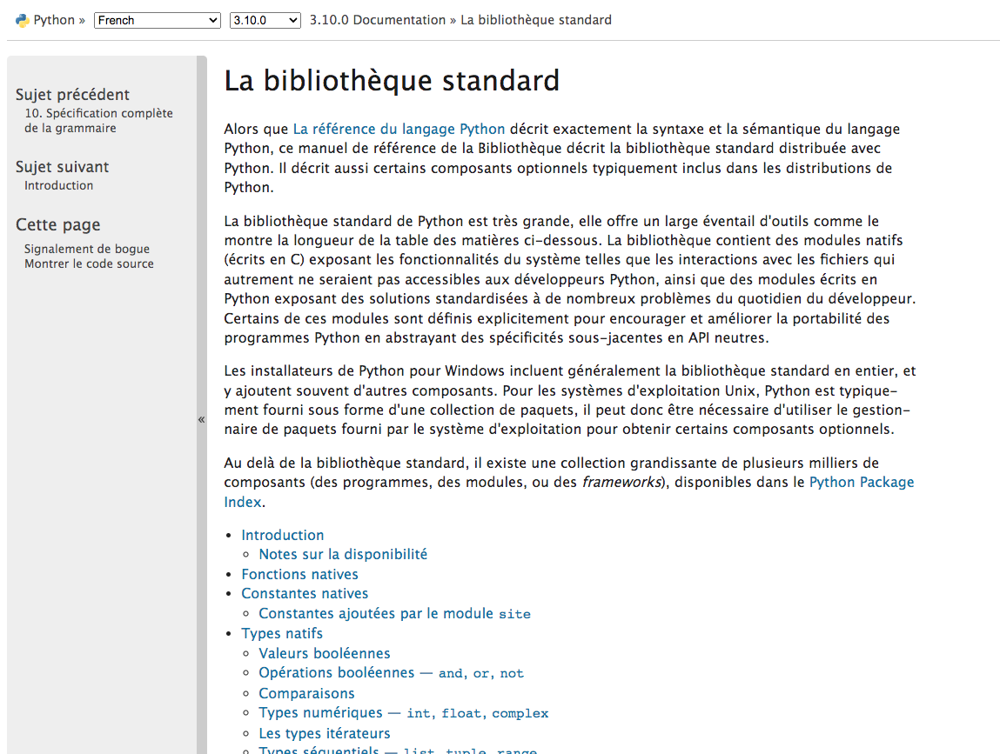
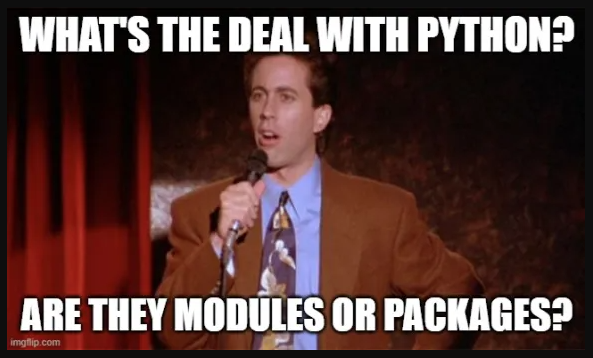
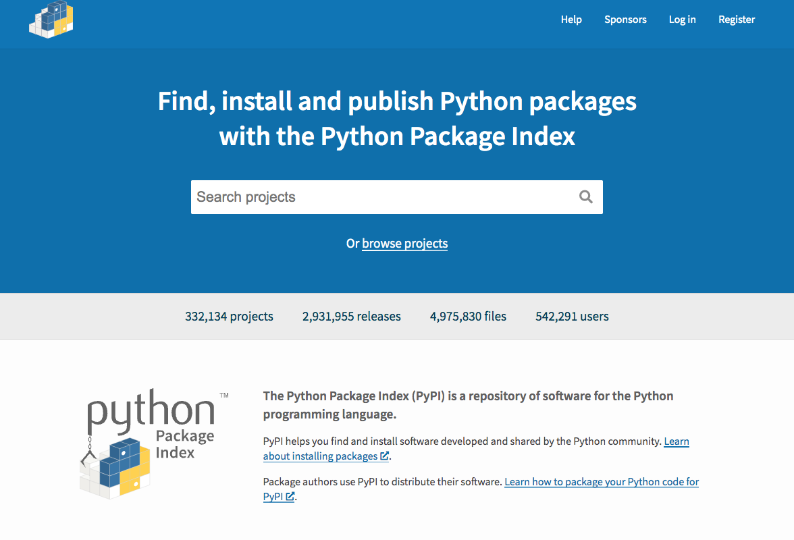
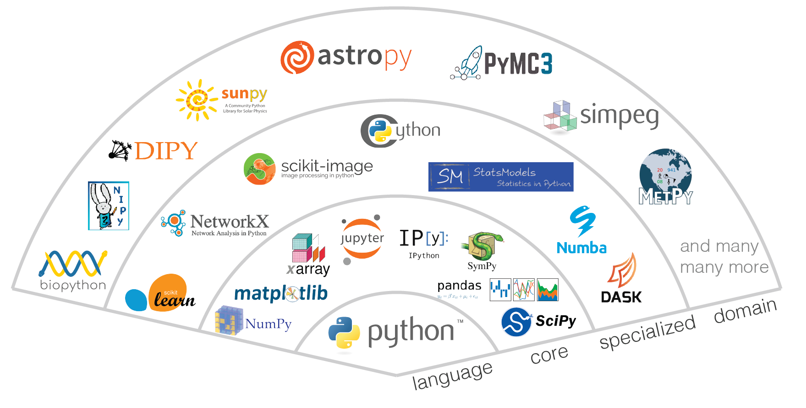

Au-delà de la bibliothèque standard
Python pour les SHS
Objectifs de la séance
Comprendre ce qu’est un module, un package, une bibliothèque
Savoir installer une bibliothèque
Avoir une carte des bibliothèques utiles en SHS
Savoir évaluer une bibliothèque avant de l’utiliser
Mettre en pratique : récupérer une page web
Langage, modules et bibliothèques

Le langage Python et sa bibliothèque standard
Bibliothèque standard
Modules de la bibliothèque standard
Importation directe, rien à installer
Exemples
Obtenir le temps actuel
Calculer une racine carrée
import math100 )
Prendre toutes les paires d’un ensemble
import itertools= "abcd" for i in itertools.combinations(ensemble, 2 ):print (i)
('a', 'b')
('a', 'c')
('a', 'd')
('b', 'c')
('b', 'd')
('c', 'd')
Au-delà, codes Python non-standards
Un vaste ensemble de contenus
L’univers des bibliothèques Python
Du module à la bibliothèque
Module : un fichier .py qui contient le codePackage : une collection de modules dans un dossierBibliothèque : un ensemble interdépendant de code
Une même bibliothèque se retrouve à plusieurs endroits
son code : un dépôt GitHub ou GitLab
sa distribution : le dépôt officiel PyPI
sa documentation : un site dédié
Modules et packages

Organisation en modules et packages
Intermède
Créons notre module Python à partir d’une fonction déjà écrite
Mettre la déclaration de la fonction dans un fichier .py
L’importer pour l’utiliser
Cela permet de rendre notre code plus modulaire.
Bibliothèques publiées
Un dépôt centralisé, PyPI , et un outil pip pour installer facilement

La page d’accueil de PyPI
Installer une bibliothèque
Une ligne de commande
Dans un notebook
Installe la dernière version compatible et les dépendances
Préciser une version : pip install pandas==2.2.3
Le nom d’installation n’est pas toujours le nom d’import
pip install beautifulsoup4 puis import bs4pip install scikit-learn puis import sklearn
Un environnement par projet
Chaque projet a ses bibliothèques, dans ses versions
Un environnement virtuel isole les bibliothèques d’un projet
Outils : venv (standard), conda, et de plus en plus uv
uv venvuv pip install requests« J’ai installé mais l’import échoue » : la bibliothèque est souvent dans un autre environnement que celui du notebook.
La situation
De nombreux codes, tous ne sont pas publiés
Une partie publiée, mais sans vérification
Anciens
Buggés
Parfois malveillants : noms imitant une bibliothèque connue
Publier demande des outils (pyproject.toml, uv, …)
Se repérer dans cette jungle …
Évaluer une bibliothèque
Avant de l’installer, regarder
la date de la dernière version sur PyPI
l’activité du dépôt : tickets ouverts, réponses des mainteneurs
la documentation : existe-t-elle, y a-t-il des exemples ?
la licence
la communauté : nombre d’utilisateurs, citations dans des publications
les dépendances installées avec elle
L’écosystème scientifique

Les bibliothèques scientifiques s’appuient les unes sur les autres
Chaque bibliothèque a son histoire…
Une carte par besoin
Collecter
requests, BeautifulSoup, Selenium / Playwright
Manipuler des tableaux
pandas, Polars, DuckDB
Statistiques
SciPy, statsmodels, pyshs
Visualiser
Matplotlib, seaborn, Plotly
Texte
spaCy, Transformers, BERTopic
Réseaux
NetworkX
Cartographie
GeoPandas
Apprentissage automatique
scikit-learn
Diffuser
Streamlit, Jupyter
NumPy : l’infrastructure numérique
Des tableaux de nombres et des calculs rapides. Presque toutes les autres bibliothèques scientifiques reposent sur elle.
import numpy as np= np.array([23 , 35 , 47 , 51 ])On l’utilise souvent sans le savoir, à travers pandas.
numpy.org
Matplotlib : l’infrastructure graphique
Tous les graphiques, avec un contrôle fin de chaque élément. Verbeuse, mais tout est possible.
import matplotlib.pyplot as plt= 10 )"Âge" )Approfondie dans le module M6.
matplotlib.org
SciPy : la boîte à outils du calcul scientifique
Tests statistiques, distributions, optimisation, distances.
from scipy import statsEn SHS, surtout le module scipy.stats.
scipy.org
pandas : les données en tableaux
Charger, nettoyer, recoder et décrire des données tabulaires. L’outil central du traitement d’enquêtes.
import pandas as pd= pd.read_csv("enquete.csv" )"diplome" ].value_counts(normalize= True )"sexe" ], df["diplome" ])Version 3 depuis 2026. Approfondie dans le module M5.
pandas.pydata.org
Polars et DuckDB : les gros tableaux
Deux alternatives récentes à pandas, beaucoup plus rapides sur des millions de lignes, sans quitter son ordinateur.
import polars as pl= pl.read_csv("enquete.csv" )"diplome" ).agg(pl.col("revenu" ).mean())import duckdb"""SELECT diplome, avg(revenu) FROM 'enquete.csv' GROUP BY diplome""" )pola.rs · duckdb.org
seaborn : visualisations statistiques
Des graphiques statistiques en une ligne à partir d’un tableau pandas. Construite sur Matplotlib.
import seaborn as sns= df, x= "diplome" , y= "revenu" )Approfondie dans le module M6.
seaborn.pydata.org
statsmodels : les modèles statistiques
Régressions linéaires et logistiques, avec des tableaux de résultats proches de ceux de R ou Stata.
import statsmodels.formula.api as smf= smf.ols("revenu ~ age + C(diplome)" , data= df).fit()La référence pour les régressions en SHS.
statsmodels.org
scikit-learn : l’apprentissage automatique
Classification, clustering, réduction de dimension, avec la même interface pour tous les modèles : fit puis predict.
from sklearn.cluster import KMeans= KMeans(n_clusters= 3 ).fit(X)scikit-learn.org
spaCy : le traitement du texte
Découper un texte en mots, les lemmatiser, repérer les catégories grammaticales et les entités nommées. Modèles disponibles pour le français.
import spacy= spacy.load("fr_core_news_sm" )= nlp("Pierre Bourdieu a enseigné au Collège de France." )for mot in doc]Approfondie dans le module M7.
spacy.io
BERTopic : les thèmes d’un corpus
Regrouper automatiquement des textes par thèmes, en s’appuyant sur les modèles de langue.
from bertopic import BERTopic= BERTopic(language= "multilingual" )= modele.fit_transform(textes)Approfondie dans le module M9.
maartengr.github.io/BERTopic
NetworkX : l’analyse de réseaux
Construire un réseau, calculer des centralités, détecter des communautés.
import networkx as nx= nx.Graph()"Ana" , "Bo" ), ("Bo" , "Cy" )])Approfondie dans le module M8.
networkx.org
GeoPandas : les données géographiques
Un tableau pandas avec une colonne de géométries : lire des fonds de carte, croiser des données, cartographier.
import geopandas as gpd= gpd.read_file("communes.geojson" )= "population" , legend= True )Approfondie dans le module M10.
geopandas.org
Streamlit : construire des applications
Transformer un script en application web interactive, sans connaître le développement web.
import streamlit as st"Mon enquête" )= st.slider("Âge minimum" , 18 , 90 )"age" ] >= age_min]["diplome" ].value_counts())Se lance avec streamlit run app.py.
streamlit.io
Et bien d’autres
BeautifulSoup pour traiter des données HTMLPlotly pour des figures interactivesSelenium et Playwright pour piloter un navigateurLes clients d’API pour interroger des modèles de langue (LLM), en ligne ou sur son ordinateur
…
Démarche quand on a une question
Identifier la bibliothèque pertinente - attention, les choses peuvent changer
L’évaluer : est-elle maintenue, documentée ?
Lire la documentation / installer
Tester sur un petit exemple
Intégrer les fonctions dont on a besoin
Éventuellement : développer de la virtuosité
Garder la trace
Un enjeu de reproductibilité pour la recherche
Noter les bibliothèques utilisées et leurs versions
un fichier requirements.txt ou pyproject.toml
pip freeze liste ce qui est installé
Citer les bibliothèques dans ses publications
À retenir sur les bibliothèques
Développer des compétences sur des bibliothèques stables
… son sens de l’orientation dans l’open source
… regarder régulièrement ce qui se fait.
Et surtout : lire la documentation et les exemples !